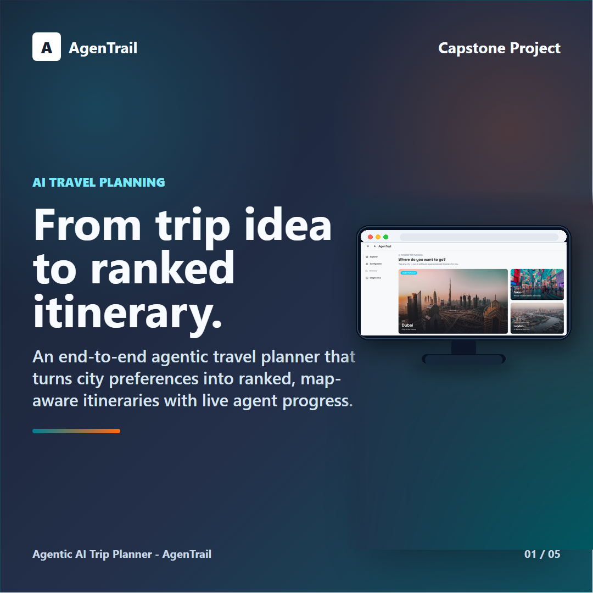
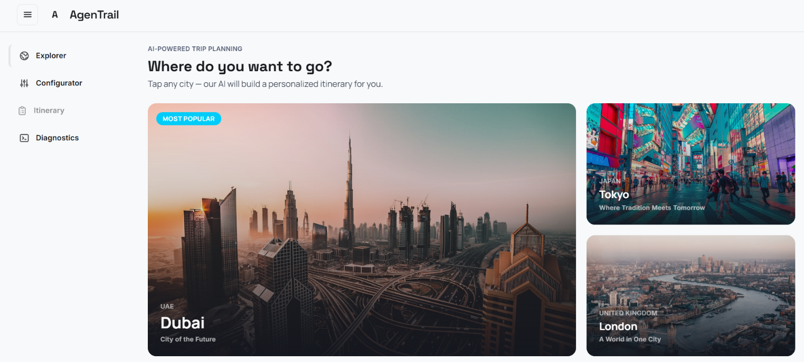
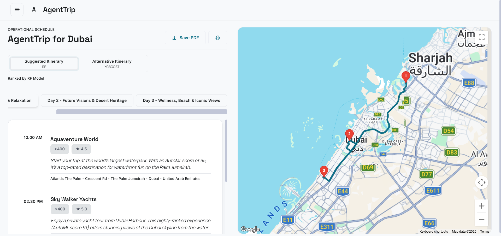
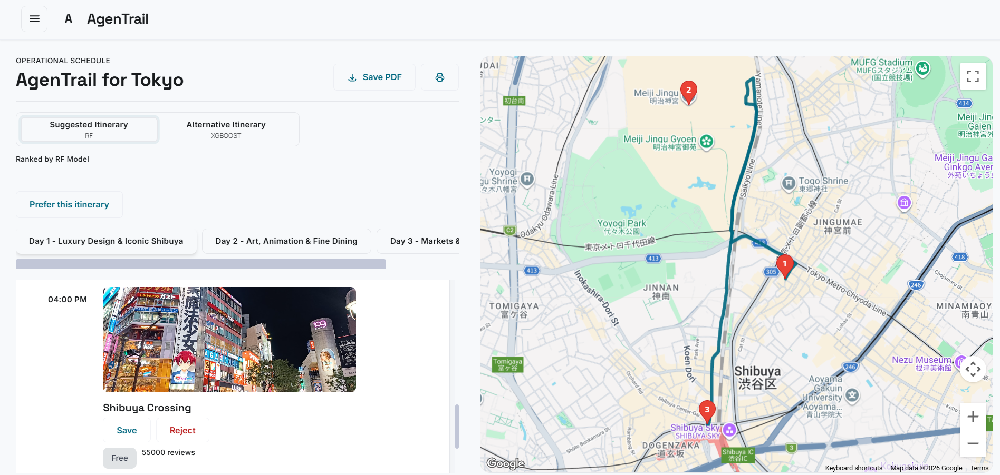
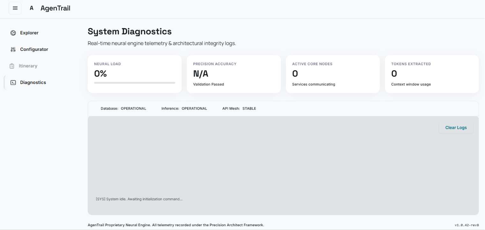

Step 01
Web agent scraper
Gemini plans browser actions over a simplified DOM and screenshot loop, then Playwright executes clicks, scrolls, waits, and extraction steps.
GeminiPlaywright
Case study
An end-to-end agentic travel planning system that turns fresh city data, user constraints, ML ranking, and LLM reasoning into personalized itineraries with visible streaming logs.

Not a prompt wrapper. The project joins data collection, ML scoring, agent planning, and a user-facing app.
AgenTrail solves trip planning as a data and orchestration problem, not just a chat interface.
The product lets a traveler choose a city, budget, family size, interests, schedule, and model preferences. Behind the UI, the backend validates the request, checks whether city data is stale, refreshes data when needed, ranks attractions, and streams the planner's reasoning back to the browser.
I built the system around a pipeline: a Playwright web agent discovers attractions, an enrichment agent normalizes records, ML models score candidates, and a planner agent assembles an itinerary using database search, AutoML scores, and Google Maps travel-time tools.
9
City datasets prepared
2
Ranking models compared
SSE
Live planner log streaming
Each layer has a narrow job, which keeps the itinerary output explainable and debuggable.
Step 01
Gemini plans browser actions over a simplified DOM and screenshot loop, then Playwright executes clicks, scrolls, waits, and extraction steps.
Step 02
Raw attraction rows are normalized into canonical categories, price tiers, descriptions, coordinates, and structured fields validated by Pydantic models.
Step 03
Feature engineering produces user-attraction pairs for Random Forest and XGBoost style ranking experiments, letting the planner compare primary and alternative itineraries.
Step 04
The agent uses tools for database search, model scores, and travel times, then produces a day-by-day itinerary based on budget, tags, family ages, and start time.
Step 05
The backend validates strict request fields and streams live log events plus final JSON results through the `/plan/stream` endpoint.
Step 06
A Vite app presents city discovery, trip configuration, generated itineraries, diagnostics, and interactive map context.
Actual screens from the working app: city discovery, generated itineraries, map-backed review controls, and diagnostics telemetry.

Step 01 / Explorer
The first screen lets travelers browse supported cities and start with a clear destination choice. Selecting Dubai, Tokyo, London, or another card carries the city into the planner configuration flow.

Step 02 / Itinerary
The generated Dubai itinerary shows model-ranked stops, prices, ratings, schedule timing, export controls, and a Google map route so the plan is inspectable instead of just text output.

Step 03 / Feedback
The Tokyo flow adds preference actions directly to itinerary cards. Travelers can save or reject stops while still seeing the route context, making the planner easier to refine over time.

Step 04 / Diagnostics
The diagnostics page exposes neural load, precision accuracy, active core nodes, token extraction, service status, and runtime logs so long-running agent work is easier to monitor and debug.
The hard parts were reliability, data quality, and making agent behavior visible.
Input
City, budget, days, family profile, tags, timing, and model options.
Data
Backend checks whether city data exists or needs refresh before planning.
Rank
Attractions are retrieved and scored using trained model artifacts.
Plan
Planner agent combines scores, metadata, travel times, and constraints.
Output
SSE sends logs during execution and a final structured JSON result.
AgenTrail demonstrates the kind of AI application work I care about: useful interfaces backed by concrete data pipelines, validation layers, model evaluation, and operational visibility. The challenge was making every layer work together without turning the product into a brittle demo.
The next version would add persistent user accounts, saved trips, richer route optimization, stronger evaluation datasets for ranking quality, and admin controls for reviewing scraped attraction records before they reach production planning.